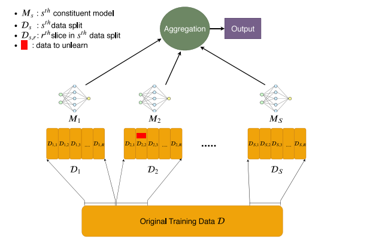

Machine Unlearning
Widely used machine learning algorithms are able to learn from new data using batch or online training methods but are incapable of efficiently adapting to data removal. Why do we need data removal though you might think. Turns out data removal is required to address various issues around privacy, fairness, and data quality. For example, the “Right to be Forgotten” in the European Union’s General Data Protection Regulation (GDPR) provides individuals with the right to request the removal of their data from an organization’s records.
Now comes the main question here. How do we go about deleting, or in better words, unlearning about this data.
There are a number of approaches to go about this which are broadly categorized into two segments: exact unlearning and approximate unlearning. Exact unlearning algorithms reduce the large computational cost of naïve retraining by structuring the initial training so as to allow for more efficient retraining; in doing so they replicate the same model that would have been produced under naïve retraining. In contrast, approximate unlearning algorithms avoid the need for full retraining, speeding up the process of unlearning by allowing a degree of approximation between the output model and the naïve retrained model.
SISA-Sharded Isolated Sliced and Aggregated
The SISA algorithm is an exact unlearning algorithm which tries to reduce the time taken in naïve unlearning. This is achieved by a reorganization of the training dataset, known as sharding and slicing.
The full SISA algorithm is applicable to any machine learning model that has been trained incrementally, for example, via gradient descent. The loss function for such models need not be strongly convex.
-
Methodology
The SISA training process to consist of four key steps - Sharded, Isolated, Sliced, and Aggregated. The training data is split into S shards, which are further split into R slices. S independent models are trained incrementally on the slices, and predictions of these models are aggregated to form a final output.

The data to unlearn is highlighted in red in this diagram. To unlearn this data point, only M2 needs to be retrained, and this process starts from slice D2,2.
SHARDING
The original training dataset is separated into approximately equal-sized shards, with each training data point contained in exactly one shard.
ISOLATION
Each of the shards is trained in isolation from the other shards, restricting the influence of each data point to a single shard.
SLICING
Each of the shards are sub-divided into slices, which are presented to the algorithm incrementally as training proceeds. The trained model states are saved after each slice.
AGGREGATION
To form the final model prediction for a data point, the predictions of each sharded model are aggregated.
-
Algorithm
Whenever a removal request for a single data point comes in, only the model trained on the shard containing the particular data point needs to be retrained and, moreover, retraining need only begin from the slice containing the data point. As a result, the expected retraining time is faster compared to naïve retraining; the exact speed-up depends on the number of shards and slices used.
**Algorithm: Initial training with SISA.** **Input:** training data D, number of shards S, number of slices R, number of epochs for each slice e. **Output:** ensemble of models h = ($h1$, . . . , hS) and intermediary model states h˜ = ({h˜i,0, . . . , h˜i,R})Si=1. 1: **procedure** SisaTrain(D; S, R, e) 2: split the data randomly into shards D1, . . . , DS and save shard indices for each data point 3: split each shard Di randomly into R slices Di,1, . . . Di,R and save slice indices for each data point 4: randomly initialise (h˜1,0, . . . , h˜S,0) 5: **for** i = 1; i ≤ S; i++ **do** 6: **for** j = 1; j ≤ R; j++ **do** 7: hi,j ← Train Di,1 ∪ · · · ∪ Di,j | h˜i,j−1 for ej epochs 8: save model state h˜i,j of model hi,j 9: **end for** 10: hi ← hi,R 11: **end for** 12: **return** h = (h1, . . . , hS), h˜U = ({h˜i,0, . . . , h˜i,R})Si=1. 13: **end procedure**
-
Efficiency
The number of shards, S, is an efficiency parameter i.e. increasing the number of shards increases the efficiency of SISA, but will degrade the predictive performance of the resultant machine learning model compared to a lower number of shards. Increasing the number of slices in each shard, R, reduces the retraining time but this does not degrade accuracy, provided that the epochs in training are carefully chosen. However, an increase in R does come at increased storage costs due to the increased number of saved model states. The efficiency-storage trade-off of R may be preferable to the efficiency-effectiveness trade-off of S.
DaRE Forests
This is an unlearning algorithm that is specific to decision-tree and random-forest based machine learning models for binary classification. This is done through the development of Data Removal-Enabled (DaRE) trees, and the ensemble of these to form DaRE Forests (DaRE RF). Through the use of strategic thresholding at decision nodes for continuous attributes, high-level random nodes, and caching certain statistics at all nodes, DaRE trees enable efficient removal of training instances.
-
Methodology
DaRE forest ensembles in the same way as a random forest, in particular a random subset of p features are considered at each split. As in regular decision trees, DaRE trees are trained recursively by selecting, at most nodes, an attribute and threshold that optimizes a split criterion. They differ from regular decision trees in three key ways as follows.
- Random nodes: The top $d_rmax$ levels of nodes in a DaRE tree are random nodes, where $d_rmax$ is an integer hyperparameter.
- Threshold sampling: During training and deletion, DaRE trees randomly sample k valid thresholds at any node that is neither a random node nor a leaf. These are thresholds that lie between two adjacent data points with opposite labels. Doing so reduces the amount of statistics one needs to store at each node and speeds up computation.
- Statistics caching: At each node, for each of the k candidate valid thresholds v, various additional statistics are stored and updated. In each case these statistics are sufficient to recompute the split criterion scores and to determine the validity of the current thresholds. As a result, the removal mechanism is able to recall training data from the stored leaf instances, meaning that training data is not required as an explicit input to the mechanism.
**Algorithm: DareTrain(D, 0; drmax, k) trains a single DaRE tree Input**: data Dnode, depth d, random node depth drmax, threshold candidate size k. **Output**: trained subtree rooted at a level-d node. 1: **procedure** DareTrain(Dnode, d; drmax, k) 2: **if** stopping criteria reached **then** 3: node ← LeafNode() 4: save instance counts |Dnode|, |D1| 5: save leaf-instance pointers(node, Dnode) 6: compute leaf value(node) 7: **else** 8: **if** d < drmax **then** 9: node ← RandomNode() 10: save instance counts |Dnode|, |Dnode,1| 11: a ← randomly sample attribute(Dnode) 12: v ← randomly sample threshold ∈ [amin, amax) 13: save threshold statistics(node, Dnode, a, v) 14: **else** 15: node ← GreedyNode() 16: save instance counts |Dnode|, |Dnode,1| 17: A ← randomly sample ˜p attributes(Dnode) 18: **for** a ∈ A do 19: C ← get valid thresholds(Dnode, a) 20: V ← randomly sample k valid thresholds(C) 21: **for** v ∈ V do 22: save threshold statistics(node, Dnode, a, v) 23: **end** **for** 24: *scores* ← compute split scores(node) 25: select optimal split(node, *scores*) 26: **end for** 27: **end if** 28: Dleft, Dright ← split on selected threshold(node, Dnode) 29: node.left = DareTrain(Dleft, d + 1; drmax, k) 30: node.right = DareTrain(Dright, d + 1; drmax, k) 31: **end if** 32: **return** node 33: **end procedure** -
Algorithm
**Algorithm: Deleting a training instance from a DaRE tree, (Brophy and Lowd, 2021). Require**: start at the root node. **Input**: node, data point to remove z, depth d, random node depth drmax, threshold candidate size k. **Output**: retrained subtree rooted at node. 1: **procedure** DareUnlearn(node, z, d; drmax, k) 2: update instance counts |Dnode|, |Dnode,1| 3: **if** node is a LeafNode **then** 4: remove z from leaf-instance pointers(node, z) 5: recompute leaf value(node) 6: remove z from database and return 7: **else** 8: update decision node statistics(node, z) 9: **if** node is a RandomNode **then** 10: **if** node.selectedT hreshold is invalid **then** 11: Dnode ← get data from the set of leaf instances(node) \ {z} 12: **if** node.selectedAttribute(a) is not constant **then** 13: v ← resample threshold ∈ [amin, amax) 14: Dnode,`, Dnode,r ← split on new threshold(node, Dnode, a, v) 15: node.` ← DareTrain(Dnode,`, d + 1; drmax, k) 16: node.r ← DareTrain(Dnode,r, d + 1; drmax, k) 17: **else** 18: node ← DareTrain(Dnode, d; drmax, k) 19: **end if** 20: remove z from database and return 21: **end if** 22: **else** 23: **if** ∃ invalid attributes or thresholds **then** 24: Dnode ← get data from the set of leaf instances(node) \ {z} 25: resample invalid attributes and thresholds(node, Dnode) 26: **end if** 27: scores ← recompute split scores(node) 28: a, v ← select optimal split(node, scores) 29: **if** optimal split has changed **then** 30: Dnode.left, Dnode.right ← split on new threshold(node, Dnode, a, v) 31: node.left ← DareTrain(Dnode.left, d + 1; drmax, k) 32: node.right ← DareTrain(Dnode.right, d + 1; drmax, k) 33: remove z from database and return 34: **end if** 35: **end if** 36: **if** xa ≤ v **then** 37: DareUnlearn(node.left, z, d + 1; drmax, k) 38: **else** 39: DareUnlearn(node.right, z, d + 1; drmax, k) 40: **end if** 41: **end if** 42: **end procedure** -
Efficiency
- The level of random nodes in a DaRE RF, drmax, is an efficiency parameter, with larger values entailing faster unlearning at the cost of predictive performance.
- DaRE RFs with random nodes have worse performance than the standard random forest.
- The number of valid thresholds to consider, k, is another efficiency parameter. Reducing k will increase efficiency, however predictive performance suffers
Approximate Unlearning (certified unlearning)
Approximate unlearning approaches attempt to address these cost related constraints. In lieu of retraining, these strategies: perform computationally less costly actions on the final weights, modify the architecture or filter the outputs. Essentially we relax the exact unlearning problem to give us a probability or a certainty with which we can say whether or not a sample was in the training set or not.
To know more about one of the approximate unlearning methods known as Selective Synaptic Dampening check out: